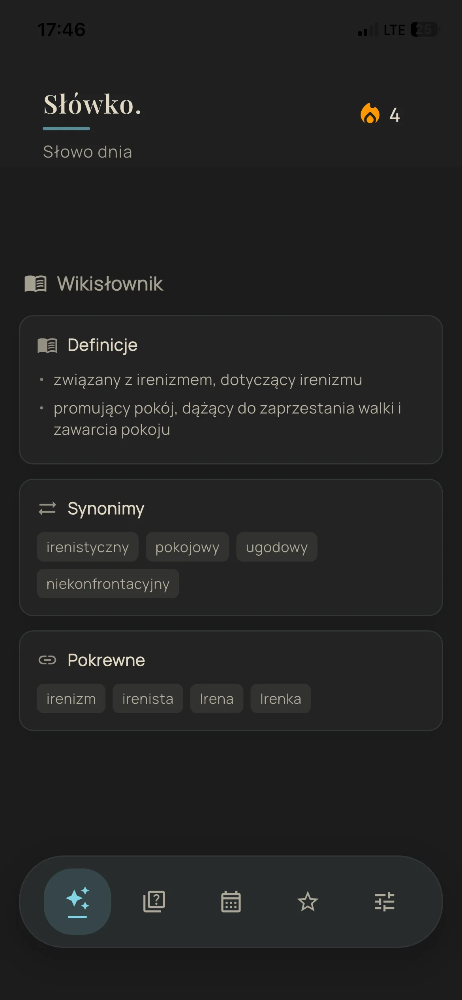
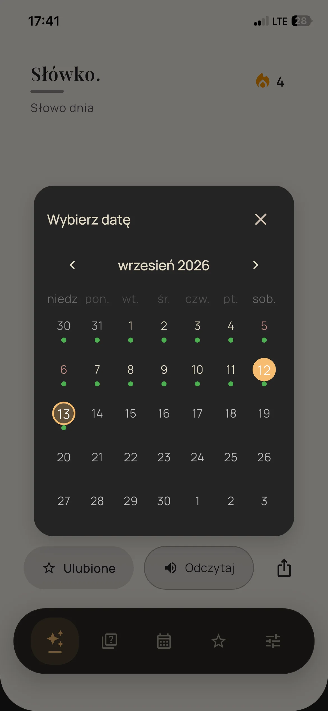

Zobacz słowo w pełnym kontekście.
Definicja, część mowy, przykład i wymowa znajdują się w jednym spokojnym widoku. Możesz także sprawdzić szczegóły i wrócić do wcześniejszych słów w kalendarzu.
- Starannie opisane polskie słowa
- Kalendarz i historia odkryć
- Ulubione zawsze pod ręką

